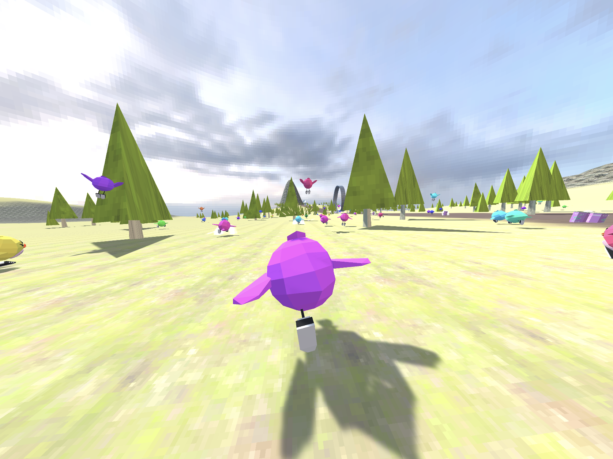

Racetracks and Rediscovery: Making a game for Ludum Dare 55
You can’t make a gravity-defying running game without breaking a few physics engines
April 2024

My seventh entry into Ludum Dare felt like a real throwback.
The last time I did a solo game jam in Unity was 6 years ago. Back then, I hadn’t even started university, and probably had < 5,000 lines of code to my name. Fast forward to now, where I’ve written more lines than I care to admit, but in the domain of Big Company Product instead of Small Throwaway Game1.
Setting aside three non-work days to spend even more time coding is sure to cause confusion in the office. But let’s phrase it differently: I get three full days to do nothing but make something fun, with no managers or approval chains to appease. It felt like a protest against the exhausted, serious-code-only lifestyle I’ve grown into, and helped me remember why I even got into computer science in the first place.
As you may expect, three days doing nothing but gamedev left me quite mentally and emotionally drained for a couple days afterwards, but plenty of other weekend plans will do that too ;)
Before reading this post, take a look at my game: Birb World Tour: Royale!
Pre-jam decisions
I’d decided to participate in this jam about a month beforehand, and spent a lot of time thinking about what I wanted to work on. I decided on aiming for these features/tools in advance:
I wanted to make something in full 3D. I’ve worked in 3D before, but never shipped anything outside of 2/2.5D. Making a 3D game feels completely different to a 2D game to me - not only do you need to created textured & animated 3D models instead of 2D sprites, but character movement, camera control and level design works quite differently in 3D. (VR games are an equally large design jump from 3D games; it’s a medium I probably won’t revisit for a while.)
I wanted to use Unity, despite the licencing debacle last year. This wasn’t an easy decision, but I figured that
- I don’t personally suffer from the new pricing model,
- I know how to use Unity’s API much better than Godot’s, and
- The challenge I wanted to tackle in this Jam were that of game design, art and music, not how to use a new game engine API.
- If someone looking to get into making indie games asked me now, I’d recommend they start with Godot to avoid feeling ‘locked-in’ to Unity. Maybe I’ll learn how to use it better someday too.
I wanted to make a ‘running game’. I was randomly feeling quite nostalgic for the late-00s Sonic games, where the gameplay boils down to “run very fast in one direction and sometimes interact with things”. (Think Sonic ’06 Mach Speed sections, Sonic Unleashed Daytime levels, maybe even Sonic Frontier’s open-zones.) The moments where you’re forced to slow down for a 2D section or precision platforming are occasionally fun, but my ideal platformer is one where the objective is to go fast. (Would fast movement in open spaces still feel as gratifying in the absence of slow, confined moments? I don’t know!)
I wanted to include AI opponents. Like, lots of them. I also wanted to disguise them as real players that you’re connected to; pretending I made a whole Battle Royale network stack in 3 days adds to the silliness. Opponents, AI are otherwise, are a classic way to give the player an objective (beat the opponents), and to populate the game world a little. Let’s just hope the AI code can be competent without taking up too many CPU cycles.
I wanted to make an original soundtrack for the game. I’ve done this before - modular music in TEMPLE IS ACID and chiptune in BLOOM ETERNAL - but nothing that’s really stood out. Some of the lesser-polished Sonic games are, infamously, forgiven by having great soundtracks, which is the exact kind of exploit I wanted in my toolkit.
Making the game (in 3 days)
I don‚Äôt really have any grand insights from this dev cycle, other than I finished it in time üòÜ
The ‘tasks’ (‘make a model/texture/sound effect’, ‘add some code to to X’, ‘fix a bug’, etc.) were done in a somewhat random order, based on what I felt more motivated to do at the time. Towards the end of the jam I focused less on new features and prioritized bugfixes, playability (i.e. the core gameplay loop), then replayability via the unlockable upgrades.
Here’s a few clips/pictures from development:
| The earliest clip I have of development. Working loop-de-loops were a must-have - hence why there’s one right after the spawn point. |
| Early AI runners - look at ’em go! |
| Early AI lobby characters enjoyed jumping a bit too much. |
| An awesome ancient bridge path that was not to be. A real gravity-defying level that only used these kinds of bendy paths would have been awesome. I reused the bridge in the final game at least. |
| The piggy bank debris are the most important feature in the game. |
Post-jam reflections
What went well
- It got finished! Regardless of what I hoped it would be, releasing a game that does something fun is always an achievement. It has original music, original models, and level design in a genre I’ve never worked in before. I got to show it to some friends at a party recently and the positive reception was so rewarding.
- Juicy graphics. There’s no coherency between the low-poly, flat-shaded models, the pixellated-but-high-poly terrain, the toon water, the electric particles, the sharp-angled UI, but man does it look cool. I wish there were more particles.
- ‚ÄòEmergent‚Äô competitive energy. I was never expecting the AI characters to put up a real fight, but as soon as I made some of them faster than the player (and prevented them from perpetually falling into the water‚Ķ), it was actually fun to try and keep up with them. There‚Äôs no navmesh, no ML agents; just random button inputs and 99 chances for the AI to succeed üòÜ
What could have been better
- The player controller. For a game all about speed, the movement code sure doesn’t handle it well! I put this down to the controller being a weird mix between Rigidbody/projectile physics and traditional character-runs-around-place code. I couldn’t get collisions working without treating the player as a ‘sphere with momentum’, which meant that the moment you came off a ramp at 100MPH, you weren’t coming back down for a while. I feel like watching more Sonic game footage would reveal their tricks for keeping the player on the ground while at speed, even while covering sharp corners, but I suspect the main limitation was acting like a Rigidbody.
- The soundtrack. A passing pre-jam thought was that I could spend equal parts on gamedev and music production, but in reality I only spent ~4 hours on music. Considering some of my more complete tracks can take about 20hrs each, this was nowhere near enough time to make quality tracks - I ended up relying more on existing loops and samples than I’d have liked. I think 4 race songs and 2 lobby songs was enough variety and they don’t sound bad, but maybe I could have written more and only picked the top handful to include.
- Task planning. There’s a lot of stuff in this ~5-minute experience: code, world environments, level features, models, textures, UI, music, sound effects, particle effects, stacking upgrades, and more. I jotted out some ‘MVP’ & ‘Nice to have’ tasks in a Google Doc, which quickly grew into a multi-page nested list of bugs, ideas, and reminders. Too much time was spent just looking at this document and moving bullet points around as I adjusted the scope/priorities. Maybe tools like Trello could have sped this up? or resulted in more formality and thus planning time?
- Level design. Maybe I’m just asking for too much, but the original plan involved ‘touring’ between different levels/regions on rotation - hence why the lobby and races are connected via tunnels. I hadn’t anticipated how difficult Unity’s terrain system would be to work with (particularly just placing objects on it), and that any non-barren environments would take a lot of designing, so unfortunately had to settle on just one. I even wasted an hour building a procedural city block generator using Kenney building assets, but realised that without aggressive performance optimization (LOD mesh/billboard swap-outs), and variations to make the level fun, it just wasn’t usable. Ah well, one level it is.
Rage against the maTheme
This isn’t related to game development, but more of an open question to the Ludum Dare community: to what extent does the theme matter?
In previous jams I’ve struggled to think of good game ideas that relate to the theme, but always found some silly way of shoehorning the theme into my game2. This is definitely a shortcoming in my game design ability, but given that limitation, shouldn’t I still endeavour to use the 72 hours to make something, regardless of theme?
This time, I had plans to shoehorn the theme in again, but couldn’t quite work out the presentation style, and so left it themeless. Thankfully, we’re allowed to opt out of the Theme rating category, but a LD game that ignores the theme still just feels a bit wrong; as expected, the lack of theme was brought up repeatedly in the review comments, and probably impacted my Overall score a little. There’s a whole section in the LDJam rules called ‘Is the theme required?’:
Officially no, you are not required to use the Theme. […] To us, the Theme is just a single voting category. […] That said, it’s worth understanding that all voting categories in Ludum Dare are opinions; The opinions of your peers. […] So as a general suggestion, if you want to score well in Ludum Dare, make sure you do use the theme in some way.
This is a good stance from the organisers, but it raises the question(s):
- To what extent does the community think about “themeiness” when voting in categories other than Theme (e.g. Overall)?
- Does opting out of Theme affect how the community votes in the Overall category?
- In future jams, would the community prefer themeless games to be declared as such (i.e. by opting out of Theme voting), or to hide its non-theme origins by shoehorning a theme into the story/artwork?
I don’t know whether my score would be lower or higher if I spent more time aligning my game with the theme than adding features, but it’d be good for all of us to better understand the importance of themes for future Jams.
Conclusion
Making games is fun! You should try it! A game jam is a good place to start releasing things, although I’d recommend installing the editor and following a tutorial project a few weeks in advance. Having a team might also help decrease the workload for your first jam. Here’s some extra tips while I’m feeling verbose:
- Try to export to WebGL/HTML5 where possible. Your players will thank you for the lack of install/setup experience, but obviously if performance is an issue for your game (i.e. large 3D environments are necessary) then you might have to settle for a downloadable executable instead.
- Focus on juice. It’s hard to describe exactly what
‘juice’ is, and especially hard to justify working on it in a Jam when

you also have critical gameplay code to write, but the amount of joy you

can create from these relatively tiny additions is always surprising to

me. These talks are a good introduction to the topic:

- Juice it or lose it by Martin Jonasson & Petri Purho
- Secrets of Game Feel and Juice by from the Game Maker’s Toolkit
- Remember, it’s a marathon, not a sprint. Three days is a long time to be doing nothing but art/coding! Make sure you take frequent breaks, go outside, sleep a normal amount, etc. Also, try and plan for your workload to be evenly spread out over the jam period, so you don’t need to crunch on the last day.
- Remember, it’s a sprint, not a marathon. Software projects that are worked on for years need elegant code, good documentation, and lots of unit tests. Chances are your game won’t be worked on after the jam, so spending half of your time writing testing/documentation/complex class hierarchies in your game code is not a great use of your time. Similarly, don’t worry about lower-quality-than-usual artwork and music - you can always go back and improve it if you have time.
As ever, if you’ve been inspired to join a game jam or just mess around in a game engine, let me know!
Return to index.